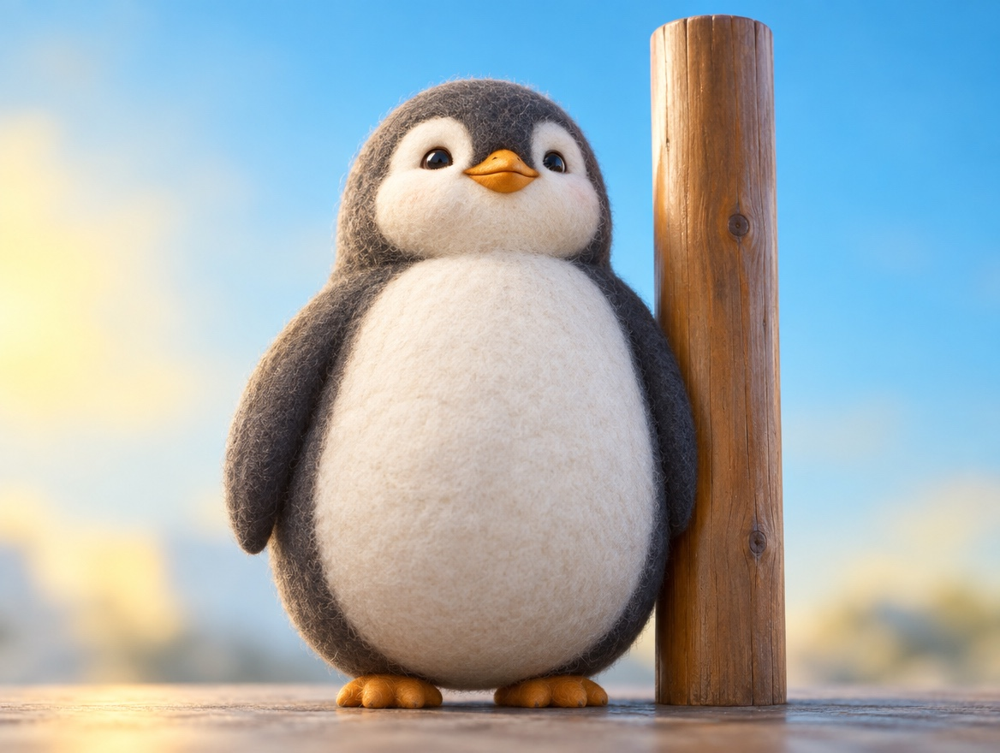

📝 DRAFT · 下書き — まだ本番に出していません · 下書き一覧
🐧 EVERYDAY LIFE⚡ 14 SEC
Stand tall in 2 seconds: breathe in, pull in your chin, and smile 🐧

2 Seconds
It seems you can make a confident pose in 2 seconds.
First Two Steps
First, take a big breath in.
Next, pull in your chin a little.
The Last Step
Last, smile a little.
⚡ TRY IT
The 2-second pose
0.00sec🎯 2.00
Tap 1 → 2 → 3 as fast as you can.
Keep going! ⏱️
🙈 Follow the order: 1 → 2 → 3.
🥇 Confident in 2 seconds! Calm and friendly.
🙂 Confident and friendly! Next, try it in 2 seconds.
😤 Hmm… without a smile, you look bossy. Do not skip step 3!
🏆 Your best: 0.00 sec
Smile Matters
Without a smile, you look bossy, not confident, so this part is important.
📚 I learned this from the Japanese blog "Panda no Ondo".